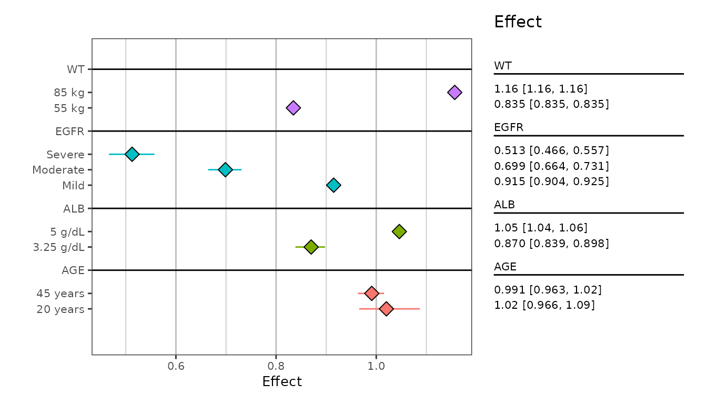
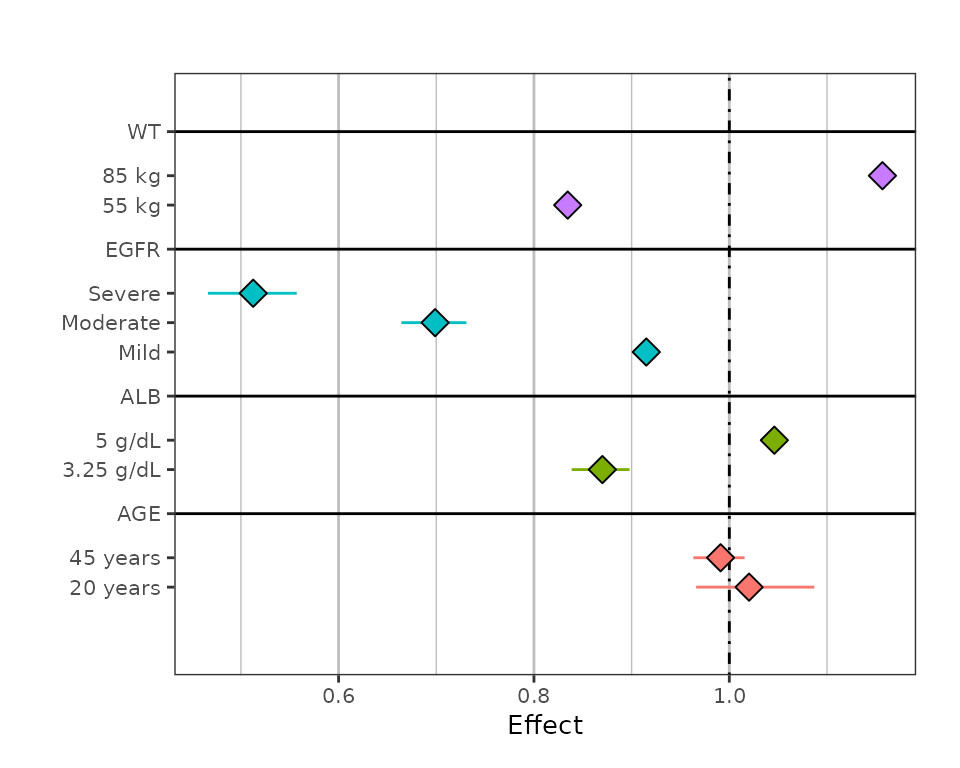
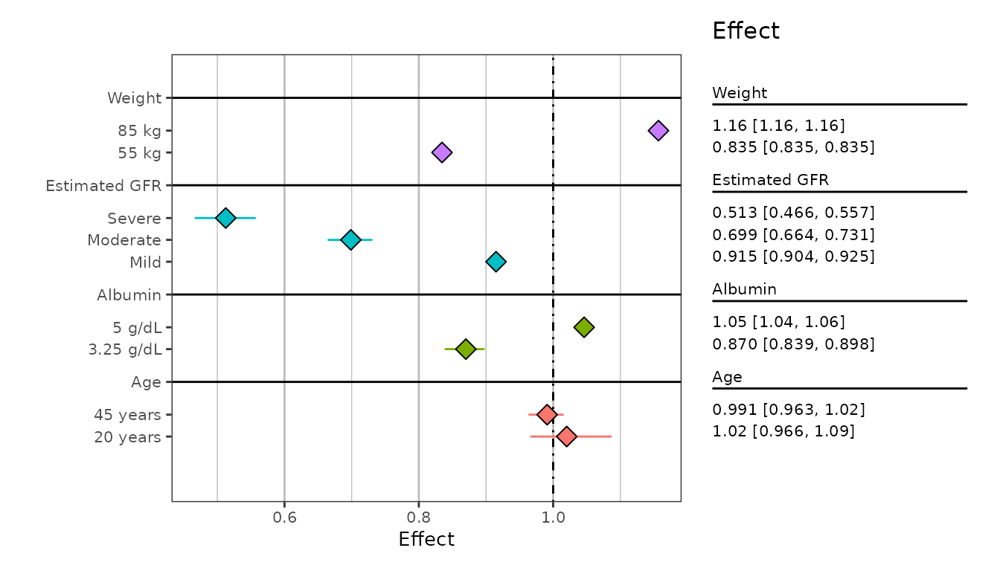
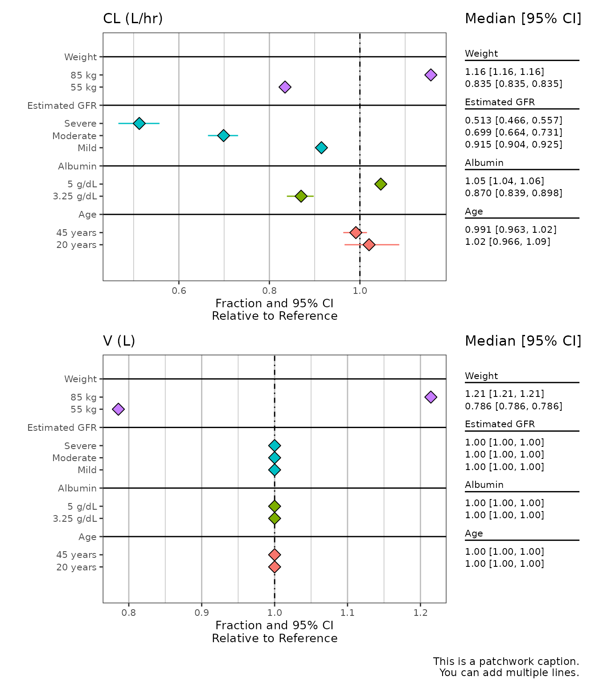
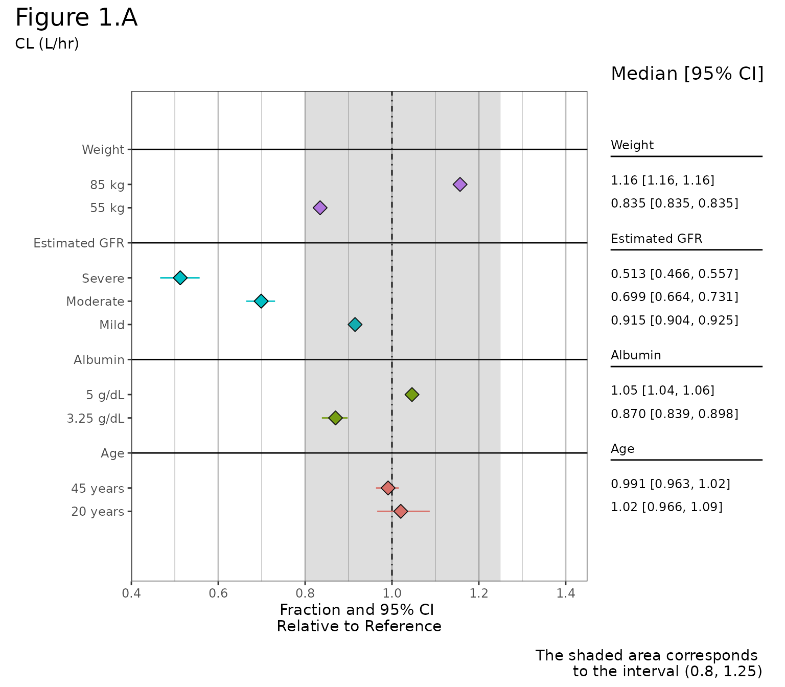

getting-started.Rmdpmforest is a package for producing forest plots: graphical summaries of covariate effects or covariate-dependent predictions in a pharmacometric model.
Given a dataset of model responses or model parameters with uncertainty at various covariate levels, the package generates plots of confidence intervals reflecting the predicted impact of the covariates. This uncertainty could come from a variety of sources, for example: simulations, bootstrapping, Bayesian posteriors.
To use the forest plot function you will have raw data coming from something like simulations. Before plotting, the raw data must first be summarized. To help with this, pmforest has a summarize_data() function. The usage of this function is described in the next section, but note that the user can write their own custom summarization function, as long as the data it returns conforms to the format described in the “Output Data” section of ?summarize_data.
The raw dataset must be in long format and have the following:
value argument of summarize_data()).group argument of summarize_data()).It can optionally have other grouping columns, described in the group_level, metagroup, and replicate arguments of ?summarize_data. Note that specifying a replicate column (i.e. a simulation number) will result in a plot with multiple intervals per group level (see the “Multiple Simulations” vignette).
An example dataset that meets these specifications comes with the package:
rawData <- readRDS(system.file(file.path("test-data", "plotData.RDS"), package = "pmforest"))
rawData %>%
select(stat, GROUP, LVL) %>%
head()
#> # A tibble: 6 × 3
#> stat GROUP LVL
#> <dbl> <chr> <chr>
#> 1 1.04 AGE 20 years
#> 2 1.06 AGE 20 years
#> 3 1.04 AGE 20 years
#> 4 1.03 AGE 20 years
#> 5 1.04 AGE 20 years
#> 6 1.01 AGE 20 yearsIn this example, stat is the “value”, GROUP is the “group” column, and LVL will be “group_level”.
Now we pass this data to summarize_data(). This is where the confidence interval and other relevant statistical parameters will be calculated.
sumData <- rawData %>%
summarize_data(
value = stat,
group = GROUP,
group_level = LVL,
probs = c(0.05, 0.95),
statistic = "median"
)
head(sumData)
#> # A tibble: 6 × 5
#> group group_level mid lo hi
#> <chr> <chr> <dbl> <dbl> <dbl>
#> 1 AGE 20 years 1.02 0.966 1.09
#> 2 AGE 45 years 0.991 0.963 1.02
#> 3 ALB 3.25 g/dL 0.870 0.839 0.898
#> 4 ALB 5 g/dL 1.05 1.04 1.06
#> 5 EGFR Mild 0.915 0.904 0.925
#> 6 EGFR Moderate 0.699 0.664 0.731The output data will have three new columns mid, lo, and hi, containing the summarized values (from the data in value) corresponding to what was passed to statistic (mid) and probs (lo/hi). The group and group_level columns will also be renamed as seen above.
Note that, if a replicate column is passed, there will be nine numeric columns (instead of three) output from summarize_data(). See the “Multiple Simulations” vignette for an example of this.
It’s worth noting here that plot_forest() (discussed in the next section) will assume the column names shown above, and will throw an error if they are renamed to anything else. In cases where users would like to reformat these tables for reports, it is recommended to do so after plotting the data.
The main plotting function is pmforest::plot_forest(). In the examples below we will use the dataset shown above. Here is a basic example:
sumData %>%
plot_forest() 
Below are a few examples showcasing the uses of some of the function arguments, as well as additional formatting techniques using the patchwork R package.
You can add a vertical line (at some reference value), and suppress adding the table of confidence intervals.
sumData %>%
plot_forest(vline_intercept = 1,
annotate_CI = FALSE) 
The summary_labels argument takes a ggplot2::labeller() function. In this example, we load a list of covariate labels with the yspec package and pass it through ggplot2::as_labeller().
spec_file <- yspec::ys_load(
system.file(file.path("test-data", "spec", "analysis3.yml"), package = "pmforest")
)
all_labels <- yspec::ys_get_short(spec_file, title_case = TRUE)
plot_labels <- as_labeller(unlist(all_labels))
sumData %>%
plot_forest(vline_intercept = 1,
summary_label = plot_labels)  Notice the more informative group labels on the y-axis and the CI table, as compared to the raw values from GROUP shown in the previous plots.
This example illustrates the use of the other labelling arguments (CI_label, x_lab, and caption).
Some notes:
metagroup column of the data, as it is most useful when using metagroup to make multiple plots (shown later on). Here we just create it with dplyr::mutate() (and add a label for it to plot_labels).caption is a patchwork argument. You can change the caption formatting using patchwork functions (see “Patchwork Annotations” section below).CI_label is not passed, the value passed to x_lab will be used for the table label.text_size applies directly to ggplot layers (minimum is 3.5), though the table text will scale with this input accordingly.
all_labels$CL <- 'CL (L/hr)'
plot_labels <- as_labeller(unlist(all_labels))
sumData %>%
mutate(metagroup = "CL") %>%
plot_forest(vline_intercept = 1,
x_lab = "Fraction and 95% CI\nRelative to Reference",
CI_label = "Median [95% CI]",
summary_label = plot_labels,
text_size = 3.5,
caption = "This is a patchwork caption.
You can add multiple lines.") You can add a shaded interval over a specified range. It is important to note that the x-axis is automatically determined based on your input data. The specified interval may therefore be cut off, as the x limits do not adjust based on the specified interval. You can correct for this by specifying the x_breaks and x_limit arguments.
sumData %>%
mutate(metagroup = "CL") %>%
plot_forest(vline_intercept = 1,
x_lab = "Fraction and 95% CI\nRelative to Reference",
CI_label = "Median [95% CI]",
summary_label = plot_labels,
caption = "This is a patchwork caption.
You can add multiple lines.",
shaded_interval = c(0.8,1.25),
x_breaks = c(0.4,0.6, 0.8, 1, 1.2, 1.4, 1.6),
x_limit = c(0.6,1.45)) Here we pull in a new dataset with the param column containing both V2 and CL, where the previous example only contained CL, and pass this to the metagroup argument of summarize_data().
sumData2 <- system.file(file.path("test-data", "plotData2.RDS"), package = "pmforest") %>%
readRDS() %>%
summarize_data(
value = stat,
group = GROUP,
group_level = LVL,
metagroup = param
)
head(sumData2)
#> # A tibble: 6 × 6
#> group group_level metagroup mid lo hi
#> <chr> <chr> <chr> <dbl> <dbl> <dbl>
#> 1 AGE 20 years CL 1.02 0.966 1.09
#> 2 AGE 20 years V2 1 1 1
#> 3 AGE 45 years CL 0.991 0.963 1.02
#> 4 AGE 45 years V2 1 1 1
#> 5 ALB 3.25 g/dL CL 0.870 0.839 0.898
#> 6 ALB 3.25 g/dL V2 1 1 1The metagroup argument doesn’t necessarily have to facet across multiple covariates, though this is a common use case. When doing this, you may consider setting annotate_CI = FALSE to simplify the plots.
all_labels$CL <- 'CL (L/hr)'
all_labels$V2 <- 'V (L)'
plot_labels <- as_labeller(unlist(all_labels))
sumData2 %>%
plot_forest(vline_intercept = 1,
x_lab = "Fraction and 95% CI\nRelative to Reference",
CI_label = "Median [95% CI]",
summary_label = plot_labels,
caption = "This is a patchwork caption.
You can add multiple lines.",
annotate_CI = FALSE) Regardless, you can specify how you want to align the plots using the nrow argument or other functions in the patchwork R package.
sumData2 %>%
plot_forest(vline_intercept = 1,
x_lab = "Fraction and 95% CI\nRelative to Reference",
CI_label = "Median [95% CI]",
summary_label = plot_labels,
caption = "This is a patchwork caption.
You can add multiple lines.",
plot_width = 9,
nrow = 2) 
The individual layers of the returned object are defined using ggplot, but the final plot is assembled using patchwork.
Thus you can add additional patchwork themes/annotations to the returned object, but cannot alter the ggplot layers. Themes can be added using the & operator, and follow the same convention as ggplot themes. In this example we change the formatting of the caption argument, combine the plot with an example table, and add some additional labels/titles.
clp <- sumData %>%
mutate(metagroup = "CL") %>%
plot_forest(vline_intercept = 1,
x_lab = "Fraction and 95% CI\nRelative to Reference",
CI_label = "Median [95% CI]",
summary_label = plot_labels,
caption = "This is a patchwork caption.
You can add multiple lines.")
wrap_plots(clp, grid::textGrob('Text on right side'), widths = c(4,1)) +
plot_annotation(
title = 'Here is a title',
subtitle = 'Here is a subtitle',
caption = 'Overrides plot_forest caption argument',
tag_levels = c('A', '1'), tag_prefix = 'Fig. ', tag_sep = '.', tag_suffix = ':',
theme = theme(plot.title = element_text(size = 18))) &
theme(plot.caption = element_text(size = 12),
plot.tag.position = c(0, 1),
plot.tag = element_text(size = 8, hjust = 0, vjust = 0))
clp <- sumData %>%
plot_forest(shaded_interval = c(0.8,1.25),
summary_label = plot_labels,
text_size = 4,
vline_intercept = 1,
x_lab = "Fraction and 95% CI \nRelative to Reference",
CI_label = "Median [95% CI]",
caption = "The shaded area corresponds
to the interval (0.8, 1.25)",
plot_width = 9, # out of 12
x_breaks = c(0.4,0.6, 0.8, 1, 1.2, 1.4),
x_limit = c(0.4,1.45),
annotate_CI = TRUE)
clp +
plot_annotation(
title = 'Figure 1.A',
subtitle = 'CL (L/hr)',
theme = theme(plot.title = element_text(size = 18))) &
theme(plot.caption = element_text(size = 11))